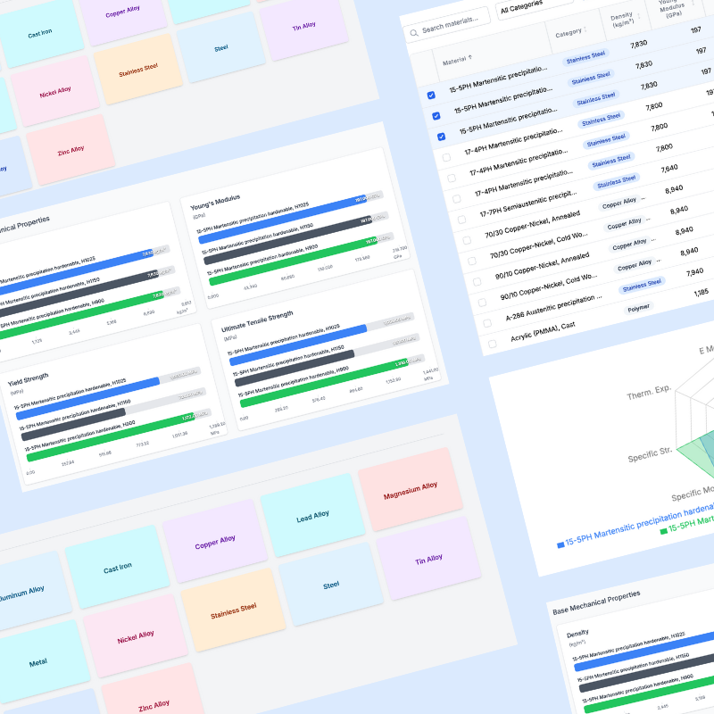
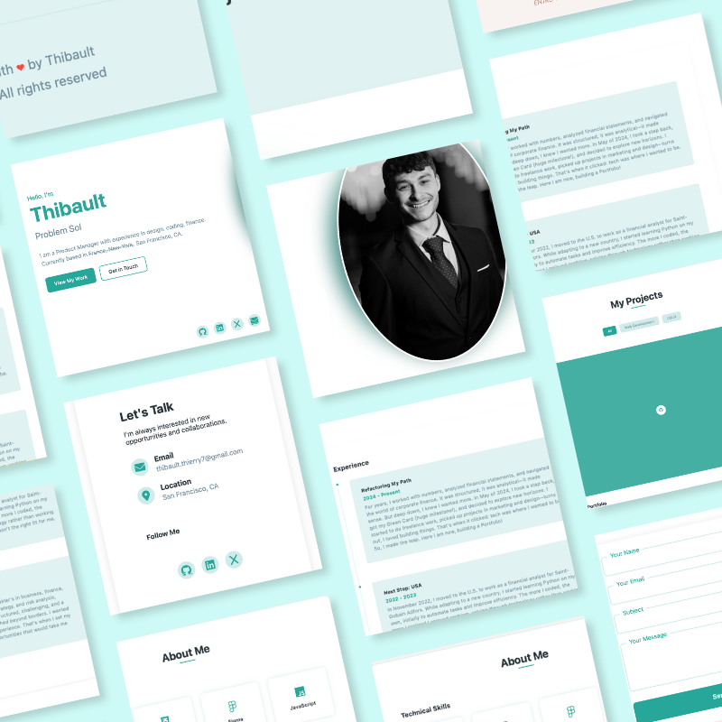
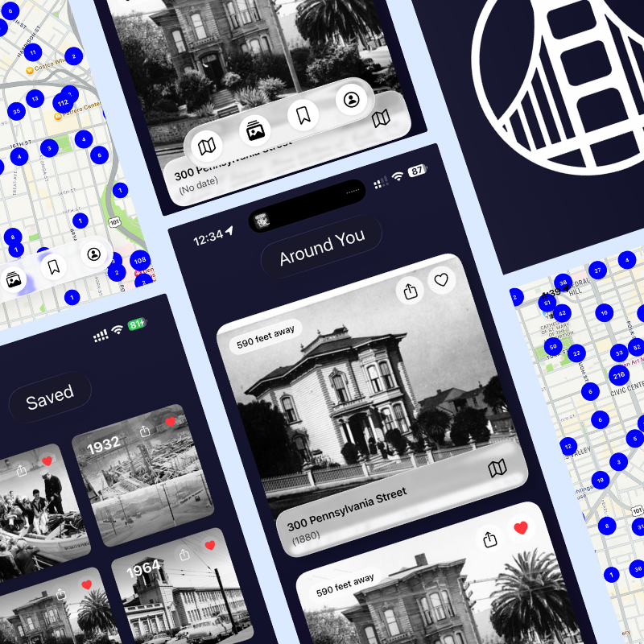
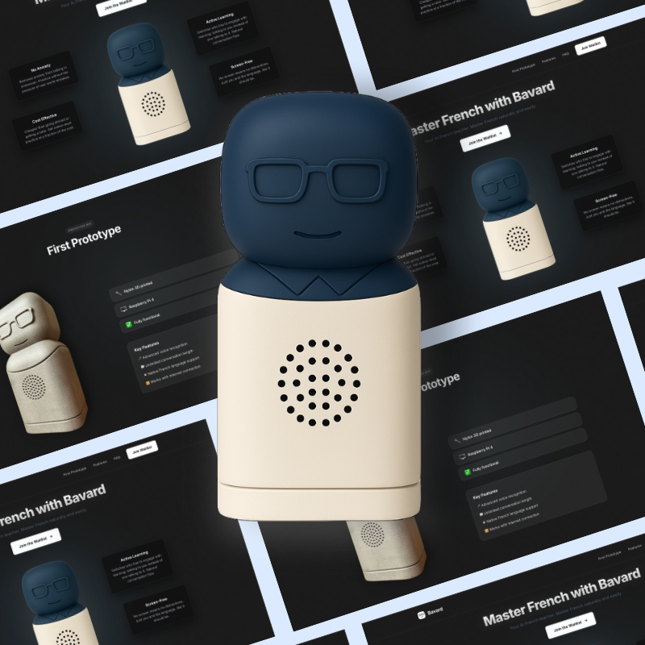

My Projects

Mechanical Engineer Helper
A web-based database and browser for engineering materials. Users can explore materials, filter them by category, and potentially compare their properties.
Next.js
TypeScript
Tailwind CSS
Prisma
Recharts
Node.js

Personal Portfolio
A modern, responsive portfolio website showcasing my journey from finance to tech, built with clean and efficient code.
HTML5
CSS3
JavaScript

SFexplorer
IOS app that lets users discover San Francisco through geolocated historical photos, overlaying the past onto today's city.
Swift
SwiftUI
iOS

Bavard
Physical language learning device, delivering real-time conversation, level assessment, and personalized learning through a playful on-device assistant.
Hardware
IoT
Embedded Systems